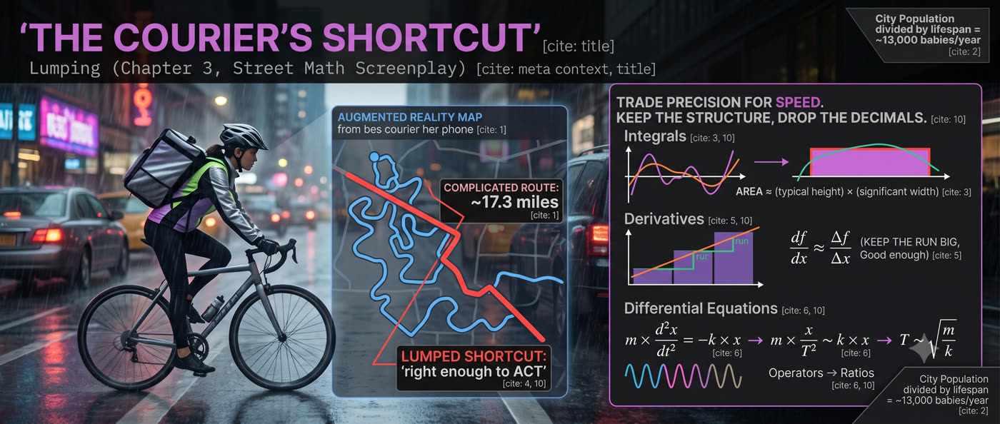

FADE IN: Rain. A bike courier, DEZ (30s, lean, messenger bag, reflective tape on everything), weaves through downtown traffic. She pulls up to a coffee shop where MARCUS (20s, new courier, first week) huddles under the awning, staring at his phone's map app. MARCUS I've got fourteen deliveries across six neighborhoods. The app says the optimal route is seventeen point three miles. But it won't account for the construction on Elm or the one-way on Fourteenth... DEZ (locking her bike) Throw the app away. MARCUS What? DEZ Not literally. But stop trying to solve it exactly. Exact solutions are for people with infinite time. You've got forty-five minutes before the sushi rolls get warm. MARCUS So how do YOU plan routes? DEZ I lump. I take something complicated — a curvy route, a messy calculation, a wiggly function — and I replace it with something simple that's close enough. A straight line. A rectangle. A single number where there used to be a function.
They duck inside the coffee shop. Dez grabs a napkin and a pen. DEZ Lumping starts with a question: how many babies are born in this city every year? MARCUS No idea. I'd have to look it up. DEZ Or you could lump. The city has about a million people. Average lifespan — call it seventy-five years. If the population is roughly steady, the number born each year has to roughly replace the number dying. MARCUS So... a million divided by seventy-five? DEZ About thirteen thousand. The actual number is probably within a factor of two of that. MARCUS That's it? No census data? No birth rate tables? DEZ I lumped the entire age distribution — all the complexity of demographics, immigration, fertility rates — into one number: seventy-five. I replaced a complicated function with a single rectangle. Population divided by lifespan. Done. She draws a rough bar chart on the napkin: |████████████| ← entire population ÷ 75 years = ~13,000 babies/year DEZ (CONT'D) That's the core idea. Replace the complicated thing with the simple thing. Get an answer you can use NOW.
DEZ Now apply it to integrals. Say you need the area under a curve — some function that rises and falls. The exact integral is hard. But a rectangle? A rectangle is easy. She draws a curve on the napkin, then boxes it with a single rectangle. DEZ (CONT'D) Height of the rectangle: the typical value of the function. Width: the range over which it's significantly big. Multiply them. Done. Area ≈ (typical height) × (significant width) MARCUS But that's just... an approximation. DEZ It's a GOOD approximation. Usually within a factor of two or three of the exact answer. And it takes ten seconds instead of ten minutes. MARCUS When would you ever need to estimate an integral on a delivery? DEZ (smiling) Every time I estimate how long a route takes. Speed varies — traffic, hills, lights. The total time is the integral of one-over-speed along the path. I don't calculate that. I lump it: average speed times distance. Time ≈ Distance / (typical speed) That's lumping an integral. Replace the wiggly function with its characteristic value. Multiply by the range. Move on.
MARCUS Okay. So if my route is seventeen miles and my average speed is about twelve miles per hour with traffic... DEZ Time is roughly seventeen divided by twelve — about an hour and a half. But here's where lumping gets smarter. You DON'T average speed across the whole route. You split into two lumps. She draws: Downtown (7 miles): slow, ~8 mph → 53 min Residential (10 miles): fast, ~15 mph → 40 min Total: ~93 min DEZ (CONT'D) Two rectangles instead of one. Still simple, but way more accurate than pretending the whole route is the same. MARCUS So lumping isn't just "one rectangle." It's... as many rectangles as you need? DEZ Exactly. The art is knowing when one rectangle is enough and when you need two or three. You lump as coarsely as you can get away with. No finer. MARCUS How do you know when it's fine enough? DEZ When adding another rectangle doesn't change your decision. If the answer is "I'll be late" with one rectangle or two rectangles — one rectangle was enough. You're not trying to be exact. You're trying to be right enough to ACT.
DEZ Lumping works on derivatives too. A derivative is a rate of change — how fast something is changing right now. But "right now" is hard. A finite change over a finite interval? Easy. MARCUS Like... instead of instantaneous speed, just use distance divided by time? DEZ Exactly. The derivative of position is speed. But I don't need the instantaneous speed at this exact millisecond. I need "roughly how fast am I going over this block." She writes: df/dx ≈ Δf / Δx "Change in f over a chunk of x" DEZ (CONT'D) The chunk should be big enough to measure, small enough to be roughly constant. That's the lump. MARCUS So lumping replaces infinitesimals with finite pieces? DEZ That's one way to say it. The fancy word is "discretization." But on the street, it's just: don't zoom in further than you need to. If the function isn't changing much over your interval, the derivative is just rise over run. MARCUS Rise over run. Like... middle school? DEZ (grinning) The best tools are the old tools. Calculus is just rise-over-run when the run gets small. Lumping says: keep the run big. Good enough.
Dez's phone buzzes — a delivery notification. She ignores it. DEZ Here's where it gets powerful. Differential equations. The scary stuff. Let me show you how lumping turns them into algebra. MARCUS Differential equations? I failed that class. DEZ Forget the class. Think about my front wheel suspension. It's a spring-mass system. Mass on a spring, bouncing up and down. The equation is: m × (d²x/dt²) = -k × x Mass times acceleration equals negative spring constant times displacement. Second-order differential equation. Textbook takes a whole chapter to solve it. MARCUS And lumping solves it... how? DEZ I replace the derivative with a ratio. The acceleration — d²x/dt² — is roughly "how much does x change" divided by "over what time squared." If the displacement is x, and the timescale of one bounce is T... d²x/dt² ~ x/T² MARCUS You just replaced a second derivative with x over T-squared? DEZ That's the lump. Now the equation becomes: m × (x/T²) ~ k × x The x cancels. I get: T² ~ m/k → T ~ √(m/k) The period of oscillation is roughly the square root of mass over spring constant. No differential equations. Just lumping.
MARCUS Wait. You just solved a differential equation by... replacing the derivative with a fraction? DEZ I replaced "the rate of change of the rate of change" with "the typical value divided by the typical timescale squared." That's the lump. And it works because we only need the ORDER of the answer — the structure. Not every decimal place. MARCUS And the exact answer? DEZ The exact period is 2π√(m/k). My lump gave √(m/k). Off by a factor of 2π — about six. That sounds bad, but I got the DEPENDENCE right. The period grows with mass, shrinks with stiffness, and it's a square root relationship. All correct. MARCUS Can you do better? DEZ Sure. If I know the dimensionless constant is 2π — because I've seen one spring before — I can slap it on. The point is: lumping gives you the skeleton. The exact constant is just clothes on the skeleton. She draws: LUMPING: T ~ √(m/k) ← structure EXACT: T = 2π√(m/k) ← structure + constant DEZ (CONT'D) The structure is the hard part. The constant is the easy part. Lumping does the hard part for free.
Dez points to the ceiling fan, which has a dangling pull chain swinging back and forth. DEZ One more. A pendulum. String length L, gravity g. How long does one swing take? MARCUS (trying the lumping approach) Okay. The force on the bob is gravity pulling it back. The "spring constant" equivalent is... uh... DEZ Think dimensionally. You have L and g. What combination gives you a time? MARCUS g is L/T². So L/g is T². So √(L/g) is a time! DEZ That's the lumping answer AND the dimensional analysis answer: T ~ √(L/g) The period of a pendulum is proportional to the square root of its length divided by gravity. Doesn't depend on mass. Doesn't depend on the angle — as long as the angle is small. MARCUS And the exact answer? DEZ 2π√(L/g). Same factor of 2π as the spring. That's not a coincidence — small oscillations are all springs in disguise. But the lumping told us everything we need: longer string, slower swing. Weaker gravity, slower swing. Square root relationship. MARCUS I just estimated the period of a pendulum without knowing any physics formulas. DEZ You knew the physics. You just didn't know you knew it. Lumping extracts what you already understand and skips the ceremony.
DEZ The pull chain is about eight inches — two-thirds of a foot, or 0.2 meters. Gravity is 10 meters per second squared. So: T ~ √(0.2/10) = √(0.02) ≈ 0.14 seconds Times 2π gives about 0.9 seconds for a full swing. Watch... They both stare at the chain. It swings. About one second per cycle. MARCUS (quietly impressed) That's... actually right. DEZ Within ten percent. From a napkin calculation that took fifteen seconds. That's the power of lumping combined with dimensional analysis. Two tools, stacked. One gives you the structure, the other gives you the number. MARCUS (looking at his delivery list differently) So when you plan a route, you're doing the same thing. Lumping the complexity into chunks you can calculate in your head. DEZ Downtown chunk: slow. Uptown chunk: fast. Hills: add twenty percent. Red lights: add thirty seconds per mile. Each lump is a rectangle. Stack the rectangles. Get the answer. Ride. She checks her phone. DEZ (CONT'D) Speaking of which — your sushi order has been sitting for four minutes.
They're both outside now, unlocking bikes. Rain has lightened to a drizzle. DEZ (strapping on her helmet) Here's the philosophy. Lumping is about courage. The courage to replace something complicated with something simple. Most people are afraid to approximate — they think it's cheating. MARCUS Isn't it? DEZ It's the opposite. Refusing to approximate is cowardice. You're so afraid of being wrong by twenty percent that you never get an answer at all. Meanwhile, I'm already three blocks away with a delivery that's ninety percent on time because I estimated instead of optimized. She swings onto her bike. DEZ (CONT'D) Lumping gives you three things: Integrals without integrating — replace curves with rectangles. Derivatives without differentiating — replace infinitesimals with finite chunks. Differential equations without solving — replace operators with ratios. All three are the same move: trade precision for speed. Keep the structure, drop the decimals. Be approximately right instead of exactly stuck. MARCUS (mounting his bike, grinning) Lump first. Refine later. DEZ (already pedaling away) Now you're a courier! She disappears into traffic. Marcus looks at his delivery list, mentally chunks it into three neighborhoods, and rides. FADE OUT.